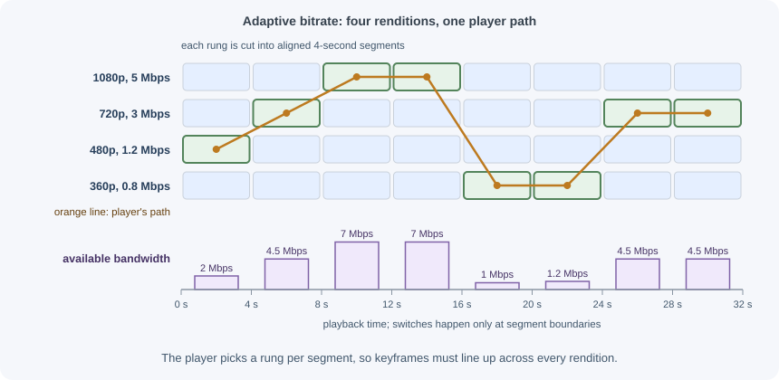

Video Storage and Streaming¶
Video is the one kind of file you should almost never serve as-is. A single uploaded MP4 is too big for phones on weak networks, too small for large screens, and often in a format some browsers cannot play. Serving video well means turning one upload into several versions, cutting them into small segments, describing them in a playlist, and delivering the segments from a CDN to a player that switches quality as the network changes. This lesson explains that pipeline, live versus on-demand video, DRM, the do-it-yourself route on AWS (S3, AWS Elemental MediaConvert, CloudFront), the managed video platforms (Mux, Cloudflare Stream, Bunny Stream, api.video, Vimeo, Amazon IVS for live, and YouTube for public content), and what each costs with a worked example.
Why it matters¶
Video dominates bandwidth. One minute of 1080p video at 5 Mbps is about 37.5 MB, so a product that adds training videos or recorded meetings can multiply its egress overnight. Video also has hard user-facing failure modes: a player that buffers, a stream that will not start on iPhones, or a "private" course video that anyone can download because its URL leaked.
The build-versus-buy decision is unusually sharp. Building the pipeline yourself on S3, a transcoder, and a CDN gives control and can be cheap at steady scale, but it is a set of moving parts (encoding settings, ladder design, packaging, signed URLs, DRM key servers, player compatibility) that a small team has to own. Managed platforms turn all of that into an upload API and a player, billed per minute. Knowing the cost drivers lets you see where each choice wins.
Real-world usage¶
- Netflix Open Connect. Open Connect is Netflix's own content delivery network. Netflix provides embedded Open Connect Appliances to qualifying internet service providers at no charge and also interconnects at internet exchanges, so video is served from inside or next to the viewer's ISP. Netflix states the aim is the best viewing experience while reducing traffic that would otherwise cross transit providers. At that scale, owning the delivery layer beats any CDN bill.
- Netflix per-title encoding. In Per-Title Encode Optimization (2015) Netflix described replacing one fixed bitrate ladder for every title with a ladder computed per title, because simple content such as animation reaches the same visual quality at far lower bitrates than complex, grainy action scenes. The lesson for everyone: the encoding ladder is a cost lever, not a constant.
- Twitch and Amazon IVS. The Amazon IVS page says the service uses "the same live streaming technology and global infrastructure that powers Twitch", with low-latency streams of about 3 to 5 seconds and real-time streams under 300 milliseconds. Live video at scale is specialised enough that AWS sells Twitch's stack as a service.
- Azure Media Services retirement. Microsoft's retirement guide states that Azure Media Services was retired on June 30, 2024, and points customers to partner solutions. Teams built on it had to migrate encoding, packaging, and playback in a fixed window, a reminder to keep video in portable formats (HLS, DASH, MP4 in your own storage) whichever platform you choose.
Popular tools and providers: AWS Elemental MediaConvert, MediaLive, and MediaPackage, Amazon CloudFront, Amazon IVS, Google Cloud Transcoder API, Live Stream API, and Media CDN, Mux, Cloudflare Stream, Bunny Stream, api.video, Vimeo, YouTube, FFmpeg, Shaka Packager, and the players hls.js, Shaka Player, and Video.js.
How it works¶
The video delivery pipeline¶
![Diagram: the video delivery pipeline in two rows. Once per video: 1, the creator uploads a source file with a resumable upload; 2, a transcoder turns it into an ABR ladder of renditions (1080p, 720p, 480p, 360p); 3, a packager cuts each rendition into 4-second segments and writes HLS and DASH playlists; 4, segments and playlists are stored in an origin bucket. On every view: 5, a CDN edge near the viewer fetches segments from the origin on a cache miss and serves them; 6, the player (hls.js, Shaka Player, or Safari) downloads segments with HTTP GET requests and switches renditions as bandwidth changes, while access control checks signed URLs or tokens and a DRM licence server issues licences. Steps 1 to 4 run once per video; steps 5 and 6 run on every view and dominate the bill.](../video-delivery-pipeline.svg)
- Upload. The source file (often called the mezzanine) goes straight to storage with a presigned or resumable upload (the tus protocol, S3 multipart). Large video should never pass through your API servers.
- Transcode. An encoder decodes the source and re-encodes it into several renditions: the same video at different resolutions and bitrates. Codecs: H.264/AVC plays everywhere; HEVC/H.265 and VP9 give similar quality at lower bitrates on supported devices; AV1 is royalty-free and compresses best but needs newer hardware to decode efficiently. Audio is usually AAC.
- Package. Each rendition is cut into short segments (2 to 6
seconds) and described by a playlist. HLS (HTTP Live Streaming,
RFC 8216) uses
.m3u8playlists; MPEG-DASH uses an XML.mpdmanifest. CMAF is a common fragmented-MP4 segment format both can reference, so one set of segments can serve HLS and DASH players. - Store. Segments and playlists sit in object storage as ordinary files. A 10-minute video with a 4-rung ladder in 4-second segments is about 600 segment files plus playlists.
- Deliver. A CDN caches the segments near viewers. Every segment is a
normal HTTP
GET, which is why video scales with the same tools as static files. - Play. The player downloads the master playlist, picks a rendition, fetches segments ahead of the playhead, measures throughput, and switches renditions between segments. Safari plays HLS natively; other browsers use Media Source Extensions through hls.js, Shaka Player, or Video.js.
Adaptive bitrate (ABR) and the encoding ladder¶

The ladder is the list of renditions you produce. The example above (1080p at 5 Mbps down to 360p at 0.8 Mbps) is a reasonable starting point for talking-head and screen-recording content; fast sports needs more bits, slides need fewer. Rules that make ABR work:
- Aligned keyframes. Every rendition must start each segment with a keyframe at the same timestamps, or switching causes glitches. Encoders are told to place keyframes at fixed intervals and not at scene cuts.
- Segment length trade-off. Short segments switch faster and start faster but mean more requests and slightly worse compression. Four to six seconds is common for on-demand video.
- Bitrate equals cost. Storage grows with the sum of all rungs; egress grows with the rung viewers actually watch. Dropping a 1080p rung that most viewers cannot use saves both.
A minimal HLS master playlist for that ladder:
#EXTM3U
#EXT-X-VERSION:6
#EXT-X-INDEPENDENT-SEGMENTS
#EXT-X-STREAM-INF:BANDWIDTH=5500000,AVERAGE-BANDWIDTH=5000000,RESOLUTION=1920x1080,CODECS="avc1.640028,mp4a.40.2"
1080p/index.m3u8
#EXT-X-STREAM-INF:BANDWIDTH=3300000,AVERAGE-BANDWIDTH=3000000,RESOLUTION=1280x720,CODECS="avc1.4d401f,mp4a.40.2"
720p/index.m3u8
#EXT-X-STREAM-INF:BANDWIDTH=1350000,AVERAGE-BANDWIDTH=1200000,RESOLUTION=854x480,CODECS="avc1.4d401e,mp4a.40.2"
480p/index.m3u8
#EXT-X-STREAM-INF:BANDWIDTH=900000,AVERAGE-BANDWIDTH=800000,RESOLUTION=640x360,CODECS="avc1.4d401e,mp4a.40.2"
360p/index.m3u8
BANDWIDTH is the peak bits per second, which the player uses to decide
whether a rendition fits; CODECS lets a device skip renditions it
cannot decode before downloading anything.
Live versus on-demand¶
| On-demand (VOD) | Live | |
|---|---|---|
| Input | A finished file | A continuous stream from an encoder (OBS, a hardware encoder, a browser) |
| Ingest protocol | HTTP upload | RTMPS is the most common; SRT and WebRTC (WHIP) are increasingly supported |
| Encoding | Once, can be slow and multi-pass | In real time, every second, for as long as the stream runs |
| Playlist | Complete (#EXT-X-ENDLIST) |
A sliding window the player re-fetches |
| Latency | Not applicable | Segment length x segments buffered, plus encoding and CDN time; low-latency HLS and WebRTC cut it to seconds or less |
| Failure mode | A bad encode, fixed by re-encoding | A dropped stream in front of a live audience |
Live is harder because nothing can be redone. Use a managed live service (Amazon IVS, Cloudflare Stream Live, Mux live streams, AWS Elemental MediaLive) unless video is your product.
Protecting video: signed URLs, encryption, and DRM¶
Three levels, in increasing strength and cost:
- Signed URLs or cookies. The CDN only serves segments to requests carrying a valid, expiring signature (CloudFront signed URLs or cookies, Cloudflare Stream signed tokens, Mux signed playback). This stops link sharing but not a logged-in user saving the stream.
- HLS AES-128 encryption. Segments are encrypted and the player fetches the key over HTTPS from your server. Better, but the key is available to the client, so a determined user can still decrypt.
- DRM. The browser's or device's content decryption module fetches a licence from a DRM licence server and decrypts inside protected code. Three systems cover the market: Widevine (Google: Chrome, Android, many TVs), FairPlay (Apple: Safari, iOS, tvOS), and PlayReady (Microsoft: Edge, Windows, many TVs). Common Encryption (CENC) lets one set of encrypted segments serve several DRM systems. Studios and paid streaming services require DRM; internal training videos rarely need more than signed URLs.
Option 1: build it on AWS (S3 + MediaConvert + CloudFront)¶
What it is. The do-it-yourself route assembles managed building blocks. An S3 bucket receives uploads. AWS Elemental MediaConvert is a file-based transcoding service: you submit a job (input file, output groups such as HLS or DASH, a ladder of outputs) and it writes segments and playlists back to S3. CloudFront serves them with signed URLs or cookies. For DRM and just-in-time packaging, AWS Elemental MediaPackage sits between storage and CDN; for live, AWS Elemental MediaLive encodes the incoming stream.
You manage: the ladder and encoding settings, job orchestration (an S3 event or queue starts a job; an EventBridge rule reacts when it completes), storage layout and lifecycle, signed URL keys, the player, and DRM integration if needed. AWS manages: the encoding fleet, scaling, storage durability, and the CDN.
How it bills (MediaConvert pricing): per minute of output, with each rendition counted separately and normalised by tier, codec, resolution, and frame rate; outputs shorter than 10 seconds are billed as 10 seconds. SD is under 720 lines, HD is 720 to 1080, 4K is above 1080 up to 2160. The Basic tier (for user-generated and short-form content, AVC, HLS and DASH supported) costs $0.0075 per minute for SD and $0.015 per minute for HD at up to 30 fps, single pass, in us-east-1. The Professional tier adds HEVC, AV1, multi-pass quality-optimised encoding, and DRM encryption at higher rates (for example $0.042 per minute for HD AVC multi-pass high quality at up to 30 fps). Storage and CloudFront delivery are billed as on the object storage page.
Google Cloud and Azure. Google Cloud offers the Transcoder API for files, the Live Stream API for live, and Media CDN for delivery. Azure no longer has a first-party media service after the Media Services retirement; Azure customers use partners or run their own encoders.
Option 2: managed video platforms¶
Each of these replaces the whole pipeline with an upload API, automatic encoding and packaging, a CDN, and a player or playback URL.
Mux (pricing, detailed rates). An API-first video platform. You upload (direct uploads from the browser are supported), Mux stores a standardised version and creates renditions with "just-in-time encoding" when viewers request them, then delivers over HLS through multiple CDNs. Billing is per minute: input (encoding) is free on the default basic quality level, which uses a reduced ladder and is on-demand only; plus and premium levels cost from $0.025 per input minute. Storage on basic and plus is $0.0024 per minute per month at up to 720p and $0.003 at 1080p; delivery is $0.0008 per minute at up to 720p and $0.001 at 1080p after the first 100,000 free delivered minutes each month, with volume tiers below that. Assets nobody watches drop to 40% and then 60% cheaper storage after 30 and 90 days. Pay-as-you-go includes a $20 monthly usage credit. Mux Data (playback analytics) is included.
Cloudflare Stream (pricing). Bills on two dimensions only: minutes stored, prepaid at $5 per month per 1,000 minutes, and minutes delivered, $1 per 1,000 minutes. Ingress and encoding are free, and bandwidth is included in delivered minutes. Storage depends on duration, not file size. On-demand and live are billed the same way. Delivery is counted per segment (4-second segments for uploads), and playback from the viewer's browser cache is not billed.
Bunny Stream (pricing). Built on bunny.net's storage and CDN: encoding is free, storage is billed per GB (Standard HDD storage from $0.01 per GB per region), and delivery per GB at CDN rates ($0.01 per GB in Europe and North America on the standard network, $0.005 per GB for the first 500 TB on the volume network, per the CDN pricing), with a $1 monthly minimum. Because delivery is per GB rather than per minute, higher bitrates cost more, and the price is low.
api.video (pricing). An API-first platform with free encoding and pay-as-you-go storage and delivery billed per minute ("as low as" $0.00285 per minute stored and $0.0017 per minute delivered on the pricing page, with volume discounts).
Vimeo (pricing). A video hosting product with a polished player, privacy settings, and team features, sold as subscription plans rather than raw usage. It suits marketing and company videos where a team wants a hosting product, not an API.
Amazon IVS (pricing). Managed live streaming. Billing is per hour of input and per hour of output per viewer, by resolution. In North America, a Standard channel (which transcodes renditions for ABR) costs $2.00 per input hour and a Basic channel $0.20; output costs $0.036 per viewer-hour for SD, $0.072 for HD, and $0.144 for Full HD for the first 10,000 hours a month. Real-time stages (WebRTC, under 300 ms) bill per participant-hour.
YouTube (public content). Free hosting and delivery for public or unlisted videos, with YouTube's player, branding, recommendations, and advertising rules. Ideal for marketing and public tutorials; unsuitable for private customer content, paid courses, or anything you must control.
Options compared¶
| Option | What it is | You manage | Pricing model | Free tier | Strengths | Weaknesses | Lock-in |
|---|---|---|---|---|---|---|---|
| S3 + MediaConvert + CloudFront | Building blocks | Ladder, jobs, player, signing, DRM | Output minutes + GB stored + GB delivered | CloudFront 1 TB/month | Full control; cheap encoding; flat-rate CDN plans | Most moving parts; you own failures | Low: standard HLS/DASH files in your bucket |
| Mux | API video platform | Uploads, player choice | Per minute stored and delivered, by quality and resolution | 100,000 delivered minutes/month | Excellent API, analytics, JIT encoding | Per-minute delivery adds up for long viewing | Medium: re-encode to leave |
| Cloudflare Stream | API video platform on Cloudflare | Uploads, player | $5 per 1,000 min stored, $1 per 1,000 min delivered | None | Simplest bill, free encoding and ingress | Fewer encoding controls; per-minute delivery | Medium |
| Bunny Stream | Storage + CDN + encoder | Uploads, player | Per GB stored and delivered | $1 minimum | Lowest delivery price per GB | Fewer enterprise features; DRM is an add-on | Medium |
| api.video | API video platform | Uploads, player | Per minute stored and delivered | Free encoding | Simple API | Smaller provider | Medium |
| Vimeo | Hosted video product | Settings and pages | Subscription plans | Plan-based | Player, privacy, team tools | Not built for app-scale APIs | Medium |
| Amazon IVS | Managed live streaming | Encoder setup, player | Input hours + viewer-hours by resolution | None stated | Twitch-grade live, 3 to 5 s latency | Live only; viewer-hours grow with audience | Medium |
| YouTube | Public video platform | Uploads, metadata | Free | Free | Free reach and delivery | No control, ads, not private | High for audience, low for files |
Cost drivers and a worked example¶
Prices checked November 2026
Prices here are US-region list prices in USD (AWS us-east-1 and North America), checked in November 2026 from the official pages linked above. Video pricing changes often and volume discounts are common; re-check with the AWS Pricing Calculator and each provider's page before deciding. Other regions, for example India, are priced differently; on AWS select the region in the calculator, and on per-region CDNs check the region table.
Every video bill is a mix of four drivers:
| Driver | Unit | What moves it |
|---|---|---|
| Encoding | Minutes of input or output | Number of renditions, codec, resolution, quality tier |
| Storage | GB-month or minutes stored | Library length x sum of rendition bitrates (plus originals) |
| Delivery | GB delivered or minutes watched | Viewers x hours watched x average bitrate actually watched |
| Extras | Per month, per play, per hour | DRM, live input hours, captions, analytics |
Egress in GB is minutes watched x 60 x bitrate (Mbps) / 8 / 1,000. At
an average of 3 Mbps, one minute watched is 22.5 MB.
Scenario: TaskFlow Academy. TaskFlow adds a library of training videos for customers. The library holds 10,000 minutes at 1080p and grows by 1,000 minutes a month (11,000 minutes stored). Customers watch 500,000 minutes a month (about 8,300 hours) at an average delivered bitrate of 3 Mbps, which is 11,250 GB of egress. Ladder: 1080p 5 Mbps, 720p 3 Mbps, 480p 1.2 Mbps, 360p 0.8 Mbps (10 Mbps in total, 75 MB per minute of video).
DIY: S3 + MediaConvert (Basic tier, AVC, <=30 fps) + CloudFront pay-as-you-go
encoding 1,000 new min x (2 HD x $0.015 + 2 SD x $0.0075) = $45.00
storage 11,000 min x 75 MB = 825 GB x $0.023 (S3 Standard) = $18.98
originals 825 GB x $0.004 (Glacier Instant Retrieval) = $3.30
delivery 1,024 GB free + 9,216 GB x $0.085 + 1,010 GB x $0.080 = $864.16
requests ~8 million segment requests, under the 10M free = $0.00
total ~ $931
(one-time backlog encode: 10,000 min x $0.045 = $450)
DIY with a CloudFront Pro flat-rate plan instead
($15: 10M requests, 50 TB transfer; one distribution)
45.00 + 18.98 + 3.30 + 15.00 ~ $82
(only if the workload fits the plan terms; see the object storage page)
Mux (basic quality, 1080p tier)
input free on basic quality = $0.00
storage 11,000 min x $0.003 = $33.00
delivery (500,000 - 100,000 free) x $0.001 = $400.00
total $433 before the $20 pay-as-you-go credit ~ $413
(an upper bound: views at the 720p tier cost $0.0008 per minute)
Cloudflare Stream
storage 11 blocks of 1,000 minutes x $5 = $55.00
delivery 500,000 / 1,000 x $1 = $500.00
encoding and ingress = $0.00
total ~ $555
Bunny Stream (standard network, one storage region)
storage ~825 GB of renditions x $0.01 = $8.25
delivery 11,250 GB x $0.01 = $112.50
encoding = $0.00
total ~ $121
(volume network at $0.005 per GB: ~$65)
Live example: a two-hour customer webinar every week (8 hours a month), 1,000 viewers each watching the whole stream at HD.
Amazon IVS, Standard channel, North America
input 8 h x $2.00 = $16.00
output 1,000 viewers x 8 h = 8,000 viewer-hours x $0.072 = $576.00
total ~ $592
Cloudflare Stream Live
delivery 8,000 h x 60 = 480,000 min / 1,000 x $1 = $480.00
recording 480 min stored (fits in one $5 block of 1,000) = $5.00
total ~ $485
![Diagram: line chart of delivery cost per 1,000 minutes watched against the average bitrate watched, from 0.5 to 8 Mbps. CloudFront pay-as-you-go at $0.085 per GB rises in a straight line from about $0.32 at 0.5 Mbps to $5.10 at 8 Mbps. Cloudflare Stream and Mux at the 1080p tier are flat at $1.00 whatever the bitrate. bunny.net CDN at $0.01 per GB rises slowly from about $0.04 to $0.60. The CloudFront line crosses the $1.00 line at about 1.6 Mbps: below it, CloudFront's per-GB list price is cheaper; above it, per-minute pricing wins, while the low per-GB CDN stays cheapest across the range.](../video-delivery-crossover.svg)
What the example shows:
- Delivery dominates. Encoding and storage are under $100 a month in every option; delivery is $15 to $864.
- Per-minute versus per-GB pricing crosses at a bitrate. CloudFront's
first-tier rate costs
bitrate x 7.5 MB x $0.085 per GBper minute, which equals Cloudflare Stream's $0.001 per minute at about 1.6 Mbps. Above that average bitrate, per-minute platforms beat CloudFront's list egress; per-GB CDNs priced like bunny.net stay cheaper still, and flat-rate CDN plans change the picture entirely. - You pay for engineering either way. The DIY numbers exclude the work of building and running the pipeline, the player, and signed-URL or DRM integration. For a small team, the difference between $121 and $555 a month is cheaper than one week of engineering time.
When to use and when not to use¶
Use a managed platform when video supports your product rather than being it, the team has no video expertise, or you need live streaming. Build on S3 + a transcoder + a CDN when you need full control of encoding and storage, already run the surrounding AWS pieces, have steady volume where flat-rate or committed CDN pricing applies, or must keep files in your own account for compliance. Use YouTube or Vimeo for public marketing video.
Do not serve a single progressive MP4 for anything longer than a short clip, build your own live pipeline unless video is the product, or pay for DRM when signed URLs meet the requirement.
Which to choose¶
| Scenario | Pick | Runner-up | Why |
|---|---|---|---|
| Side project or portfolio | YouTube (unlisted) or Cloudflare Stream | Bunny Stream | Free or a few dollars; no pipeline to build |
| Early startup adding video to a product | Mux | Cloudflare Stream | Best developer experience, 100,000 free delivered minutes, analytics included; Stream if you want the simplest bill |
| Steady high traffic | S3 + MediaConvert + CDN with committed or flat-rate delivery | Bunny Stream | At steady volume, per-GB delivery at negotiated rates beats per-minute list prices; you control the ladder |
| Spiky traffic (a launch video goes viral) | Cloudflare Stream or Mux | CloudFront flat-rate plan | Per-minute or flat pricing scales without capacity work; no surprise per-GB spikes at list rates |
| Global audience | Mux (multiple CDNs) or Cloudflare Stream | CloudFront | Global edges and multi-CDN delivery matter more than storage location |
| Compliance-heavy (for example healthcare training or patient content) | S3 + MediaConvert + CloudFront in an account under the AWS BAA | A platform whose official page offers a BAA | AWS lists HIPAA-eligible services on its HIPAA reference; check that page for each service you use, and use a video platform for health data only if its official page offers a BAA |
| Large files and heavy egress (long lectures, high bitrate) | Bunny Stream | DIY with a flat-rate CDN plan | Per-GB delivery at $0.005 to $0.01 is far below per-minute or per-GB hyperscaler list prices |
| Team with no ops people | Cloudflare Stream | Mux | One upload API, one bill, free encoding; nothing to operate |
| Live events | Amazon IVS | Cloudflare Stream Live or Mux | Purpose-built low-latency live; choose by latency need and audience size |
![Diagram: decision flow for video hosting. Is it public marketing or tutorial video? Yes leads to YouTube or Vimeo. No leads to: is live streaming needed? Yes leads to a managed live service: Amazon IVS, Cloudflare Stream Live, or Mux live. No means an on-demand library, then: is it a small team or a team without video expertise? Yes leads to a managed video platform: Mux, Cloudflare Stream, or Bunny Stream. No leads to: must the files stay in your own cloud account? Yes leads to building on AWS with S3, MediaConvert, CloudFront, and signed URLs; no leads to comparing Bunny Stream with a do-it-yourself build using flat-rate CDN pricing, on delivery cost.](../video-hosting-decision-flow.svg)
Practical examples¶
Direct uploads to Cloudflare Stream¶
TaskFlow API creates a one-time upload URL; the browser uploads straight to Cloudflare, so the video never touches TaskFlow's servers.
// src/video/stream-upload.js: create a direct creator upload (Node 24, built-in fetch)
const ACCOUNT_ID = process.env.CF_ACCOUNT_ID;
const API_TOKEN = process.env.CF_STREAM_TOKEN;
export async function createVideoUpload({ maxMinutes = 60 }) {
const res = await fetch(
`https://api.cloudflare.com/client/v4/accounts/${ACCOUNT_ID}/stream/direct_upload`,
{
method: "POST",
headers: {
Authorization: `Bearer ${API_TOKEN}`,
"Content-Type": "application/json",
},
body: JSON.stringify({
maxDurationSeconds: maxMinutes * 60,
requireSignedURLs: true, // playback needs a signed token
}),
},
);
const body = await res.json();
if (!body.success) throw new Error(`Stream API error: ${JSON.stringify(body.errors)}`);
// Store uid against the course lesson; give uploadURL to the browser.
return { uploadURL: body.result.uploadURL, uid: body.result.uid };
}
maxDurationSeconds also reserves that much storage until the real
duration is known. Basic POST uploads are limited to 200 MB; larger
files must use the resumable tus protocol.
DIY: a MediaConvert job from a template¶
Keep the ladder in a job template (created once in the console or with infrastructure as code), and give each job only the input:
{
"Inputs": [
{
"FileInput": "s3://taskflow-video-uploads/uploads/v_8f2c/source.mp4",
"AudioSelectors": {
"Audio Selector 1": { "DefaultSelection": "DEFAULT" }
}
}
]
}
# Start a transcode with the 4-rung HLS template; tag it with the video ID
aws mediaconvert create-job \
--role arn:aws:iam::<account-id>:role/taskflow-mediaconvert \
--job-template taskflow-hls-4-rung \
--settings file://job-input.json \
--user-metadata videoId=v_8f2c
An EventBridge rule catches the result and triggers whatever marks the video ready (or alerts on failure):
{
"source": ["aws.mediaconvert"],
"detail-type": ["MediaConvert Job State Change"],
"detail": { "status": ["COMPLETE", "ERROR"] }
}
DIY on one machine: FFmpeg to HLS¶
For small libraries or to understand what a transcoder does, FFmpeg produces a three-rung HLS ladder with aligned keyframes:
# Encode a 3-rung HLS ladder with 2-second keyframes and 4-second segments
mkdir -p out
ffmpeg -i source.mp4 \
-filter_complex "[0:v]split=3[a][b][c];[a]scale=-2:1080[v1080];[b]scale=-2:720[v720];[c]scale=-2:480[v480]" \
-map "[v1080]" -c:v:0 libx264 -b:v:0 5000k -maxrate:v:0 5500k -bufsize:v:0 10000k \
-map "[v720]" -c:v:1 libx264 -b:v:1 3000k -maxrate:v:1 3300k -bufsize:v:1 6000k \
-map "[v480]" -c:v:2 libx264 -b:v:2 1200k -maxrate:v:2 1350k -bufsize:v:2 2400k \
-map a:0 -map a:0 -map a:0 -c:a aac -b:a 128k -ac 2 \
-preset veryfast -force_key_frames "expr:gte(t,n_forced*2)" -sc_threshold 0 \
-f hls -hls_time 4 -hls_playlist_type vod \
-hls_segment_filename "out/stream_%v_%05d.ts" \
-master_pl_name master.m3u8 \
-var_stream_map "v:0,a:0 v:1,a:1 v:2,a:2" \
"out/stream_%v.m3u8"
splitandscale=-2:<height>make three resolutions while keeping the aspect ratio (width rounded to an even number).-force_key_frameswith-sc_threshold 0puts a keyframe exactly every 2 seconds in every rendition, so 4-second segments align across rungs.-maxrateand-bufsizecap bitrate peaks so a rendition stays within theBANDWIDTHthe player expects.-var_stream_mappairs each video rendition with an audio copy;%vbecomes the rendition index, so FFmpeg writesstream_0.m3u8tostream_2.m3u8, their segments, andmaster.m3u8inout/.
Upload the out/ directory to object storage and serve it through a CDN.
Running this yourself means owning a worker fleet, retries, and queueing,
which is exactly what MediaConvert and the platforms sell.
Playing HLS in TaskFlow Web¶
// web/src/player.js: HLS playback with hls.js, falling back to native HLS
import Hls from "hls.js";
export function attachPlayer(video, src) {
if (Hls.isSupported()) {
const hls = new Hls();
hls.loadSource(src);
hls.attachMedia(video);
return () => hls.destroy();
}
if (video.canPlayType("application/vnd.apple.mpegurl")) {
video.src = src; // Safari and iOS play HLS natively
return () => video.removeAttribute("src");
}
throw new Error("HLS is not supported in this browser");
}
src is the master playlist URL, for example
https://media.example.com/videos/v_8f2c/master.m3u8, signed if the CDN
requires it. The HTML side of <video> is covered in
audio and video.
Best practices¶
- Upload directly from the browser to storage or the platform; never stream video bodies through API servers.
- Design the ladder for your content and audience; drop rungs few viewers use and measure the bitrate actually delivered.
- Align keyframes across renditions and keep segment length consistent.
- Keep the original upload (in an archive class) so you can re-encode with better codecs later; keep a copy of the renditions or originals outside a managed platform if leaving would be costly.
- Protect private video with signed URLs or tokens at minimum; add DRM only when contracts require it.
- Estimate delivery as viewers x minutes x bitrate before choosing per-GB or per-minute pricing.
- Watch playback quality metrics (startup time, rebuffering ratio, average bitrate) with the platform's analytics or a player SDK.
- Set lifecycle rules: unwatched renditions can be deleted and regenerated from originals; managed platforms often discount unwatched storage.
In production¶
- Videos buffer constantly on mobile networks. Detect: player analytics show a high rebuffering ratio and most sessions stuck on the lowest rendition. Cause: the ladder's lowest rung is too high (for example 720p at 3 Mbps), or segments are too long for fast adaptation. Fix: add a 360p or lower rung, shorten segments, and cap the starting bitrate.
- Quality switches cause visible glitches or stalls. Detect: errors or decoder resets in player logs at switch points. Cause: keyframes are not aligned across renditions, so segments start at different times. Fix: force fixed keyframe intervals and disable scene-cut keyframes in every rendition.
- The CDN bill tripled after adding video.
Detect: CDN usage grouped by path shows
/videos/dominating bytes; the average delivered bitrate is near the top rung. Cause: a high top rung with the player defaulting to it on desktops, or per-GB delivery at list rates. Fix: review the ladder, cap resolution to the player size, and compare per-minute platforms, per-GB CDNs, and flat-rate plans. - Private course videos appear on other sites. Detect: CDN logs show segment requests from unknown referrers or a single URL fetched by many IPs. Cause: unsigned, permanent playlist URLs. Fix: require signed URLs or tokens with short expiry, rotate the signing keys, and add DRM if the content is valuable enough.
- Uploads of long recordings fail at 90%. Detect: client errors on large uploads, often after minutes; platform logs show partial uploads. Cause: a single-request upload over an unreliable connection or past a size limit (200 MB for basic Cloudflare Stream uploads). Fix: use resumable uploads (tus or S3 multipart) with retry per chunk.
- Transcode jobs pile up after a bulk import.
Detect: MediaConvert queue metrics or job counts in
SUBMITTEDstatus grow; videos stay "processing" for hours. Cause: thousands of jobs submitted at once into an on-demand queue. Fix: rate-limit job submission through a work queue, prioritise new user uploads over backfill, and process the backlog off-peak.
Important terminology¶
- Rendition: One encoded version of a video at a given resolution and bitrate.
- Encoding ladder: The set of renditions produced for adaptive playback.
- ABR (adaptive bitrate streaming): Playback that switches renditions segment by segment to match the viewer's bandwidth.
- Segment: A short chunk of a rendition (typically 2 to 6 seconds)
fetched with an HTTP
GET. - HLS / DASH: The two main HTTP streaming formats; HLS uses
.m3u8playlists, DASH uses.mpdmanifests. - CMAF: A common fragmented-MP4 segment format usable by both HLS and DASH.
- Mezzanine: The high-quality source file kept for re-encoding.
- Keyframe (I-frame): A frame decodable on its own; segments and switches must start on one.
- DRM: Digital rights management; licence-based decryption inside a protected module (Widevine, FairPlay, PlayReady).
- Viewer-hour / minute delivered: Units used by live and video platforms to bill delivery regardless of bytes.
Common mistakes and misconceptions¶
- Serving the original upload as a single MP4 to every device.
- Thinking encoding is the expensive part; delivery usually dominates.
- Comparing per-minute and per-GB prices without converting through the average bitrate.
- Believing signed URLs or AES-128 encryption are DRM.
- Building a live pipeline for a monthly webinar.
- Throwing away the originals, which blocks re-encoding with better codecs later.
- Assuming a managed platform is forever; Azure Media Services customers had to migrate when it was retired.
Revision questions¶
- Describe the steps from upload to playback, and say which run once per video and which run on every view.
- Why must keyframes be aligned across renditions, and what happens to playback if they are not?
- What do HLS, DASH, and CMAF each define, and how do they relate?
- Calculate the egress in GB for 200,000 minutes watched at an average of 2 Mbps, and its cost at $0.085 per GB. (Answer: 200,000 x 60 x 2 / 8 / 1,000 = 3,000 GB; 3,000 x $0.085 = $255.)
- At what average bitrate does CloudFront's $0.085 per GB equal a per-minute price of $0.001? Show the formula.
- When are signed URLs enough, and when do you need DRM?
- A team of two engineers wants to add course videos to its SaaS. Which option would you recommend and why? What would change your answer?
- Why is live video harder to run yourself than on-demand video?
Further learning¶
- RFC 8216: HTTP Live Streaming
- Apple: HLS authoring specification for Apple devices
- AWS Elemental MediaConvert user guide
- Mux video pricing details, Cloudflare Stream documentation
- hls.js and Shaka Player
- AWS Pricing Calculator, Google Cloud Pricing Calculator, Azure Pricing Calculator
- Related: CDN, object and file storage
- Next: backup and archive storage. Back to the hosting and cloud platforms overview.